Antes de empezar
Con esto a la mano, la instalación toma entre 1 y 2 horas, con el dueño presente.
| Qué | Para qué | ¿Obligatorio? |
|---|---|---|
| PC con Windows 10 u 11 de 64 bits, 4 GB de RAM | Donde corre la caja | Sí |
| Impresora de tickets térmica (ticketera) de 58 u 80 mm, con su driver instalado | Imprimir tickets | Recomendado |
| Cajón de dinero conectado a la impresora de tickets (cable tipo teléfono) | Se abre solo al cobrar en efectivo | No |
| Lector de código de barras USB (modo teclado) | Escanear productos | Recomendado |
| Celular con cámara en el wifi de la tienda | Escanear productos sin lector (Caja → Celular) | No |
| Balanza con cable USB o serial (puerto COM) | Pesar lo que se vende a granel desde la caja (Gestión → Impresora y balanza) | No |
| Memoria USB de 16 o 32 GB (cualquier marca), solo para respaldos | Copia de seguridad fuera de la PC | Recomendado |
| Nombre del negocio y dirección; si ya tienes RUC, también el RUC, la razón social y el régimen | Asistente de instalación | Sí. El RUC no: puedes empezar sin él |
| Nombres de quienes atienden | Cada uno tendrá su PIN | Sí |
| Lista de productos en la plantilla Excel | Cargar el catálogo de una vez | No (se puede ir agregando) |
| Certificado digital (.pfx) y usuario SOL secundario | Boletas y facturas electrónicas | Solo para enviar a SUNAT |
| Clave del plan Pro (la envía Velyon por WhatsApp) | Boletas, facturas, más de 3 personas con PIN o vender más de S/ 8,000 al mes | Solo para emitir boletas o facturas |
- Internet solo hace falta para enviar comprobantes a SUNAT. Sin internet se vende igual y se envía después.
- Si el negocio ya emite boletas con otro sistema, usa series nuevas (por ejemplo B002) para no repetir números.
- El PIN lo elige cada persona el día de la instalación; no se anota en ningún lado.
¿Todavía no tienes RUC? Igual puedes instalar RetailCore y vender desde hoy. Más abajo, en «Empezar sin RUC y formalizarte después», te explicamos cómo y por qué te conviene sacarlo.
Paso 1: instalar el programa
El instalador pone RetailCore en la PC en menos de un minuto y no pide clave de administrador.
- Entra a velyonapps.github.io/retailcore y pulsa Descargar gratis: baja el archivo VelyonRetailCore-win-Setup.exe (unos 90 MB). Si la PC de la bodega no tiene internet, descárgalo en otra y pásalo con una USB.
- Haz doble clic en él. Si Windows muestra «Windows protegió su PC», pulsa Más información y luego Ejecutar de todas formas (pasa porque el instalador aún no está firmado). Si la PC no tiene internet, el aviso dice «No se puede obtener acceso a SmartScreen»: pulsa Ejecutar.
- Espera unos 30 segundos: aparece el acceso directo RetailCore POS en el escritorio y en el menú Inicio, y el programa se abre solo con el asistente.
- Las siguientes veces se abre con ese acceso directo. Si en una PC nueva aparecen avisos de Windows u OneDrive, ciérralos o elige No, gracias: no afectan a RetailCore.
El programa se instala en %LOCALAPPDATA%\VelyonRetailCore y los datos del negocio quedan aparte, en %LOCALAPPDATA%\RetailCore. Por eso desinstalar o actualizar nunca borra las ventas.
Actualizaciones automáticas. Cuando hay internet, RetailCore revisa al abrir si hay una versión nueva, la descarga sin interrumpir la venta y la instala al cerrar el programa. No hay que hacer nada. Para comprobar que el instalador es el oficial, la página muestra su huella SHA-256 (en PowerShell: Get-FileHash .\VelyonRetailCore-win-Setup.exe).
Paso 2: el asistente de 5 pasos
La primera vez que abres RetailCore aparece el asistente; en unos 10 minutos deja la bodega lista para vender. Las capturas usan datos de ejemplo.
1. Tu empresa. Escribe el RUC (la app revisa que sea válido), la razón social tal como sale en la ficha RUC, el nombre comercial y la dirección. Elige el régimen: en el Nuevo RUS no se emiten facturas. Si aún no tienes RUC, marca Todavía no tengo RUC y escribe solo el nombre y la dirección (ver «Empezar sin RUC» más abajo).
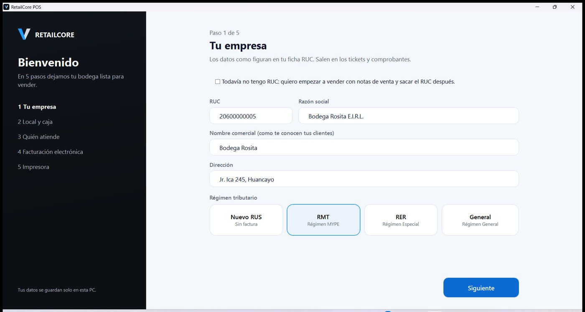
2. Local y caja. Normalmente se deja todo como viene: «Local principal», código de establecimiento 0000 y «Caja 1». Abajo ves las series que se crearán (B001 boletas, F001 facturas, BC01/FC01 notas de crédito, NV01 notas de venta). Si el negocio ya usó alguna de esas series con otro sistema, avísanos antes de seguir.
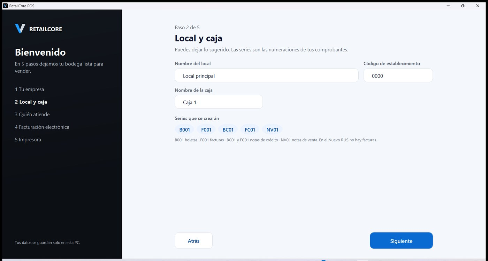
3. Quién atiende. El dueño escribe su nombre y elige su PIN de 4 números (dos veces). Con + Agregar cajero se suma a cada persona que atiende, cada una con un PIN distinto. Al pulsar Crear mi negocio se guarda todo.
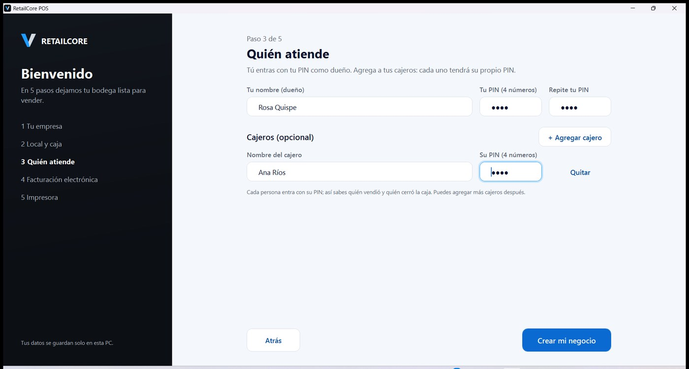
4. Facturación electrónica. Si ya tienes el certificado digital (.pfx) y el usuario SOL secundario, cárgalos aquí (ver Paso 6 de este manual). Si no, pulsa Omitir y configurar después: la caja funciona igual. Sin RUC, el asistente se salta este paso.
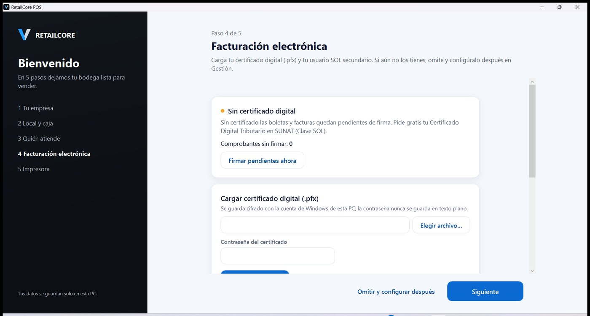
5. Impresora. Elige tu impresora de tickets de la lista, el ancho del papel (58 u 80 mm) y pulsa Imprimir ticket de prueba. Si aún no está conectada, omite: los tickets se guardan como archivo hasta que la configures.
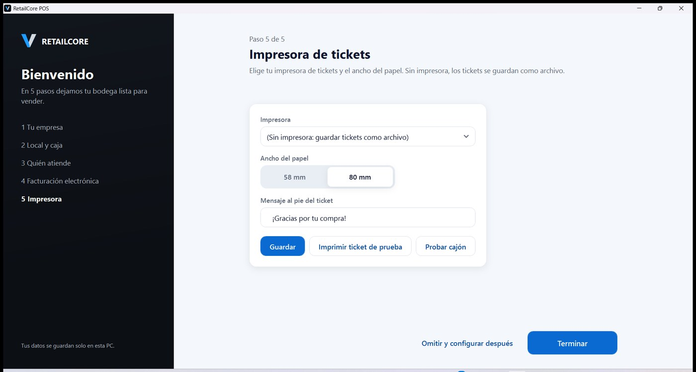
Al terminar aparece ¡Tu bodega está lista! con el resumen de los planes: empiezas con el Gratis, sin fecha de vencimiento, y ahí ves qué incluye el Pro y qué traerá la Nube. Pulsa Empezar a vender.
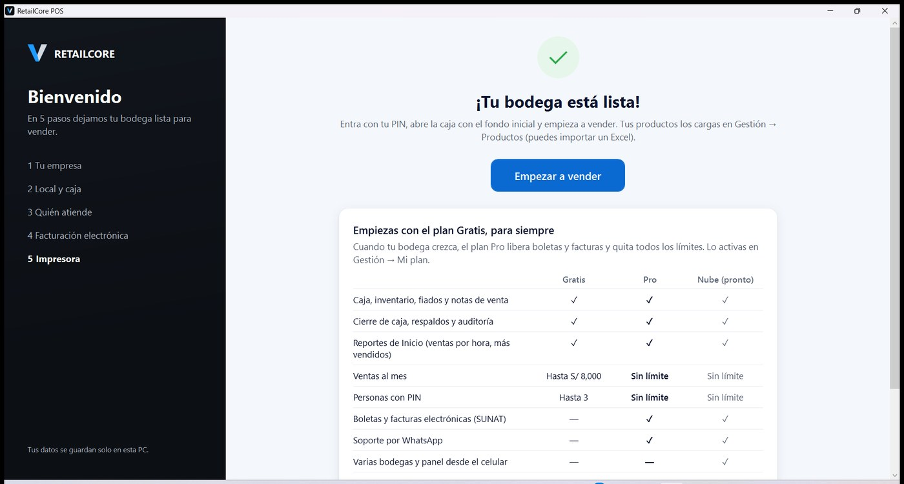
Paso 3: primer ingreso y apertura de caja
Cada día se empieza igual: elegir tu nombre, escribir tu PIN y contar el dinero del cajón.
- Toca tu nombre y escribe tu PIN de 4 números en el teclado de la pantalla (o con el teclado de la PC).
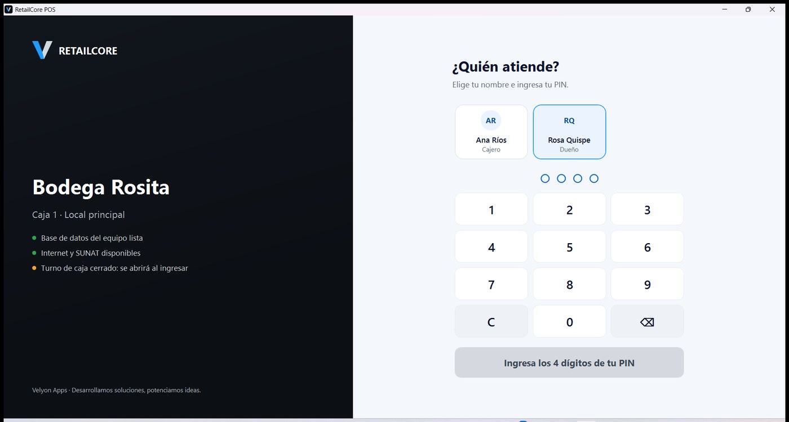
- Si la caja está cerrada, la app pide el fondo inicial: el sencillo con el que empiezas para dar vuelto. Escríbelo o toca un monto y pulsa Abrir turno y empezar a vender.
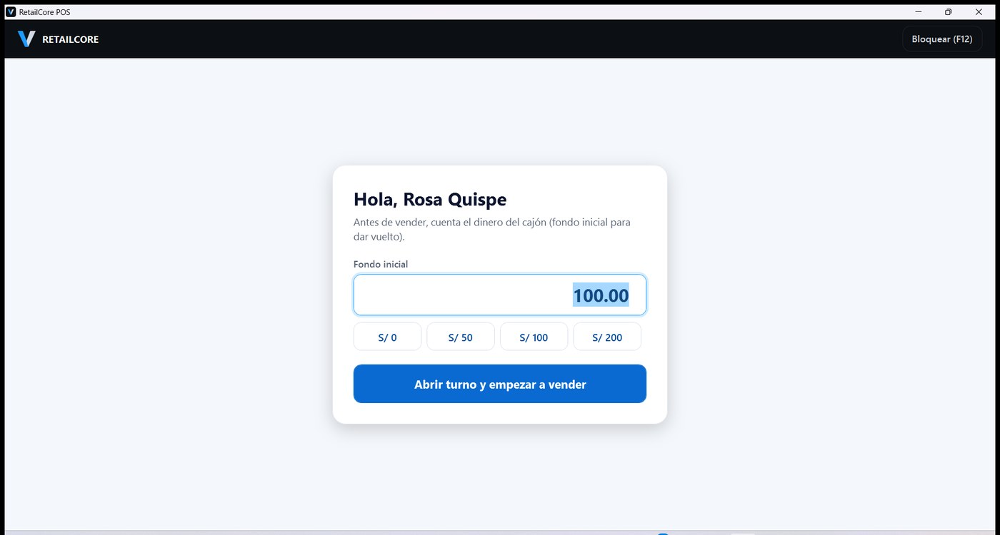
- Ya estás en la caja. Sin productos cargados se ve vacía; en el Paso 4 los cargamos.
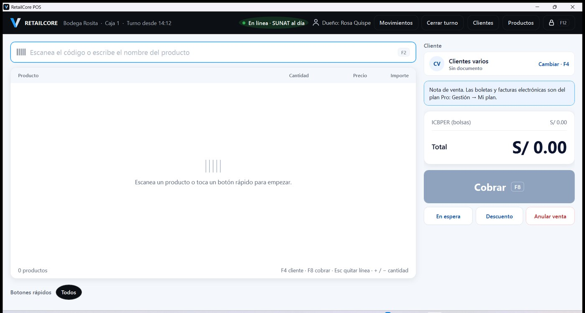
Si te equivocas 5 veces de PIN, tu usuario se bloquea 15 minutos; el dueño puede desbloquearte antes en Gestión → Usuarios y PIN.
Paso 4: cargar los productos desde Excel
Con una plantilla de Excel se cargan todos los productos de una vez; los que falten se agregan después, uno por uno.
- En la caja pulsa Productos (arriba a la derecha). Se abre Gestión, en la lista de productos.
- Pulsa Exportar / plantilla y guarda el archivo. Sin productos, trae filas de ejemplo para guiarte. Para llenarla hace falta Excel; si la PC de la bodega no lo tiene, llénala en otra computadora o en Google Sheets o LibreOffice (gratis) y guárdala como .xlsx.
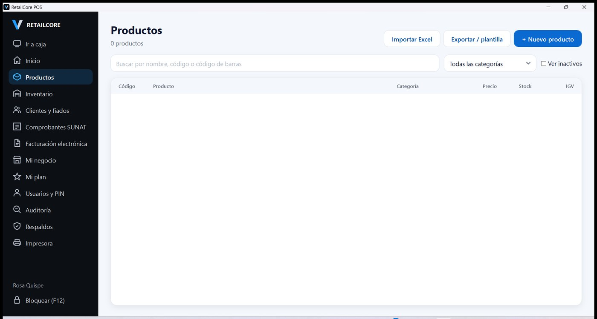
- Llena una fila por producto. Lo mínimo es nombre, precio (con IGV) y unidad (
undokg). Conviene completar también:codigos_barras: el número bajo las barras (varios separados por coma).afectacion:gravado,exonerado(pan, huevos, arroz) oinafecto.stock_inicial: cuánto hay hoy en el estante.boton_rapido:sipara que aparezca como botón en la caja (pan, huevos, gaseosas).icbper:sisolo para la bolsa plástica.
- Guarda el Excel, vuelve a Productos y pulsa Importar Excel. La app dice cuántos creó y, si alguna fila tiene un error, en qué fila está y qué corregir.
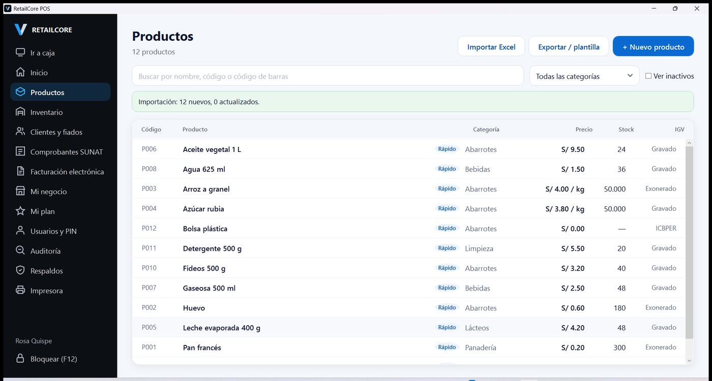
- Pulsa Ir a caja: los productos marcados como rápidos ya aparecen como botones, ordenados por categoría.
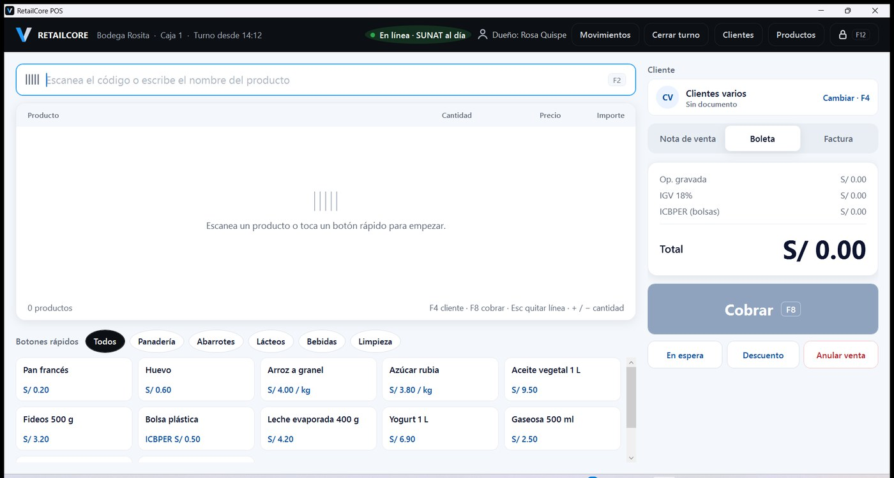
Si vuelves a importar el mismo Excel con cambios (por ejemplo, precios nuevos), los productos con el mismo código se actualizan en lugar de duplicarse.
Paso 5: activar el plan Pro
El plan Gratis no vence para bodegas que venden hasta S/ 8,000 al mes (el tope del Nuevo RUS) y trabajan con hasta 3 personas con PIN. El plan Pro (S/ 399 al año) quita todos los límites, libera las boletas y facturas electrónicas y permite preguntarle al asistente de ayuda (F1) con tus palabras; se activa con una clave de Velyon, sin internet.
- En Gestión → Mi plan se ve el plan actual (Gratis), qué incluye cada plan y el código de este equipo.
- Paga S/ 399 por Plin al 968 141 933 y pulsa Pedir mi clave por WhatsApp: se abre WhatsApp con un mensaje que lleva el negocio, el RUC, el código del equipo y el pago. Adjunta la captura del Plin y envíalo.
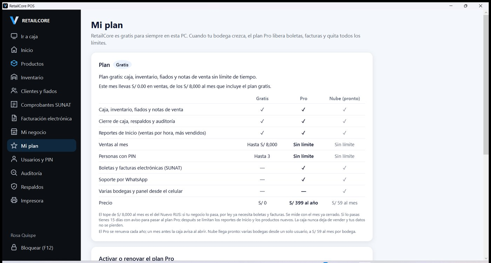
- Velyon responde con una clave que empieza con
RC1.. Pégala en Clave que te envió Velyon y pulsa Activar. - Aparece «✓ Plan Pro activado» con la fecha de vencimiento. Desde ese momento la caja permite boleta y factura.
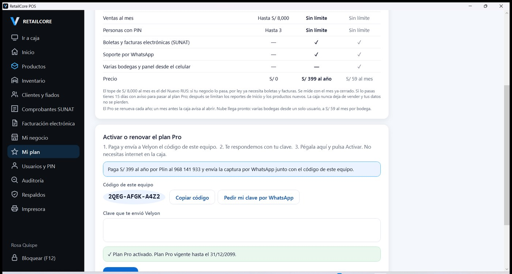
Renovación. El plan dura un año. Un mes antes de vencer, la caja lo avisa cada vez que se abre (al dueño, con el botón Renovar en Mi plan; al cajero, para que le avise al dueño), y también Inicio y Mi plan. Al renovar, Velyon envía una clave nueva que suma el año al vencimiento anterior: renovar antes no hace perder días. Si no se renueva, hay 15 días de gracia y luego la caja sigue vendiendo con notas de venta, sin perder ningún dato. Si cambias de PC o reinstalas Windows, el código cambia: pide una clave nueva.
Si tu negocio pasa los S/ 8,000 al mes. Se mide con el mes ya cerrado, nunca a mitad de mes. Desde el 80 % del tope, Inicio avisa que estás cerca. Si el mes pasado lo superaste, tienes 15 días con aviso para pasar al Pro; después se limitan los reportes de Inicio (ticket promedio, ventas del mes, ventas por hora y más vendidos) y el registro de productos nuevos. La caja sigue vendiendo, el cierre y el registro para el contador funcionan igual y no se pierde ningún dato. Los 15 días de gracia son una sola vez: si lo pasas dos meses seguidos, se limita desde el día 1. Un mes por debajo del tope lo devuelve todo a la normalidad.
| Gratis | Pro | Nube (pronto) | |
|---|---|---|---|
| Caja, inventario, fiados, notas de venta, cierre, respaldos y auditoría | ✓ | ✓ | ✓ |
| Compras, vencimientos, promociones, cobranza de fiados, celular como lector, balanza y ticket por WhatsApp | ✓ | ✓ | ✓ |
| Ganancia real, reporte semanal en PDF, lista de compras, límite sugerido, comisión del cajero y rol Solo consulta | — | ✓ | ✓ |
| Ventas al mes | Hasta S/ 8,000 | Sin límite | Sin límite |
| Personas con PIN | Hasta 3 | Sin límite | Sin límite |
| Boletas y facturas electrónicas (SUNAT) | — | ✓ | ✓ |
| Soporte por WhatsApp | — | ✓ | ✓ |
| Varias bodegas y panel desde el celular | — | — | ✓ |
| Precio | S/ 0 | S/ 399 al año | S/ 59 al mes por bodega |
Paso 6: facturación electrónica
Este paso es para negocios con RUC y plan Pro activo. Las boletas y facturas se firman en la PC y se envían solas a SUNAT; primero se prueba en beta (sin validez) y luego se pasa a producción.
Antes, el dueño crea en SUNAT Operaciones en Línea (con su Clave SOL) un usuario SOL secundario con permiso para enviar comprobantes, y tiene a la mano el certificado digital (.pfx) con su contraseña. La clave SOL principal nunca se escribe en RetailCore.
- En Gestión → Facturación electrónica, pulsa Elegir archivo…, busca el .pfx, escribe su contraseña y pulsa Guardar certificado. Se guarda cifrado en la PC.
- Marca Enviar los comprobantes a SUNAT automáticamente, elige Beta (pruebas) y pulsa Guardar envío a SUNAT. En beta no hace falta usuario SOL.
- Haz una venta de prueba con boleta y revisa Gestión → Comprobantes SUNAT: en unos segundos debe decir Aceptado.
- Con la prueba bien, vuelve aquí, elige Producción, escribe el usuario SOL secundario y su clave, y guarda. Desde ese momento las ventas son reales ante SUNAT.
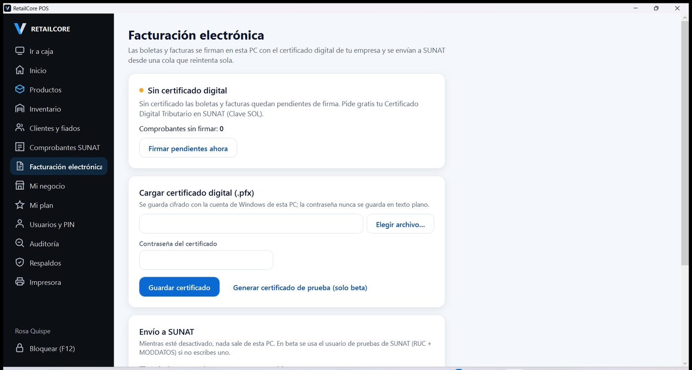
- ¿Aún no tienes certificado? Se puede vender igual. Las boletas quedan «pendientes de firma» y se firman después con Firmar pendientes ahora.
- Sin internet las ventas siguen; la app reintenta el envío sola. La pastilla verde de la caja dice cuántos faltan enviar.
- Nuevo RUS que solo usa notas de venta: puede dejar el envío apagado.
Empezar sin RUC y formalizarte después
Muchas bodegas empiezan sin RUC y se formalizan cuando el negocio ya camina. RetailCore lo permite: vendes, llevas tu inventario y tus fiados desde el primer día, y el RUC lo agregas cuando lo tengas, sin perder nada.
Cómo empezar. En el paso 1 del asistente marca Todavía no tengo RUC y escribe solo el nombre del negocio y la dirección. El asistente se salta la facturación electrónica.
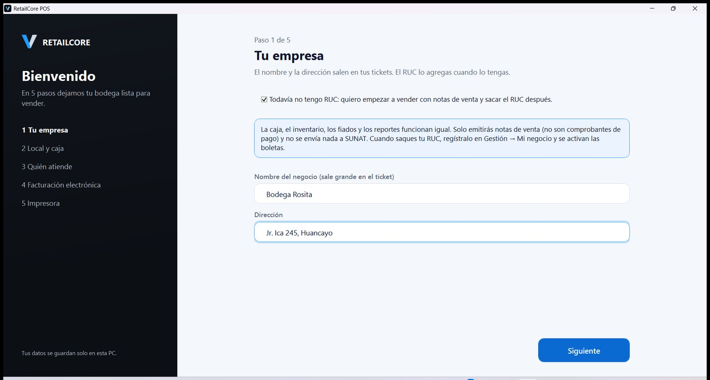
Cómo se ve la caja. Todas las ventas salen como nota de venta: no se elige boleta ni factura, y el ticket no lleva RUC ni IGV y dice «Documento interno. No es comprobante de pago». En Gestión no aparecen Comprobantes SUNAT ni Facturación electrónica, y no se envía nada a SUNAT.
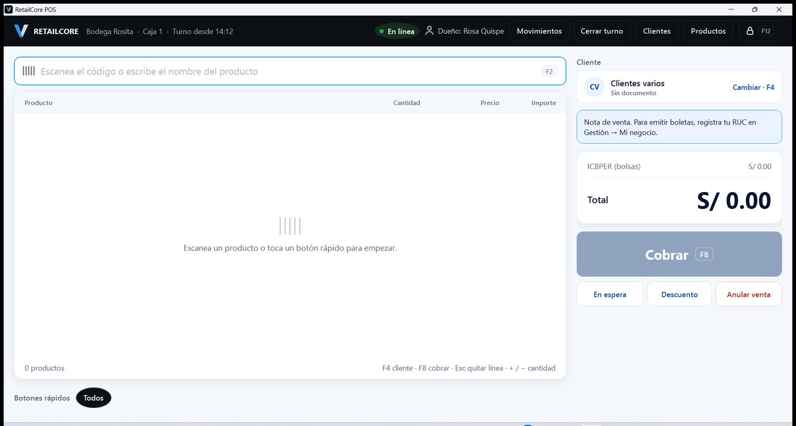
Ojo: la nota de venta no reemplaza a la boleta. SUNAT puede multar o cerrar temporalmente un local que vende sin entregar comprobantes de pago, así que conviene no dejar pasar mucho tiempo.
¿Por qué te conviene sacar el RUC?
- Es gratis. Si eres persona natural, lo sacas con tu DNI en la web o la app de SUNAT, o en un centro de servicios.
- En el Nuevo RUS pagas una cuota fija y baja: S/ 20 al mes si vendes hasta S/ 5,000 mensuales, S/ 50 si vendes hasta S/ 8,000. No llevas contabilidad.
- Das boleta. No pierdes al cliente que la pide, y con un régimen que permite factura también le vendes a empresas, colegios o municipios.
- Accedes a crédito. Bancos y cajas municipales piden RUC y ventas que puedas sustentar; los reportes de RetailCore te ayudan a mostrarlas.
- Compras mejor. Varios mayoristas y distribuidores trabajan solo con clientes con RUC.
- Trabajas tranquilo si llega una fiscalización de SUNAT.
Registrar el RUC en RetailCore
- Entra como dueño a Gestión → Mi negocio.
- En Ya tengo RUC escribe el RUC, la razón social como sale en tu ficha RUC, y elige tu régimen.
- Pulsa Registrar mi RUC. La app crea las series de boletas (y de facturas, si tu régimen las permite) y desde la siguiente venta ya puedes elegir boleta.
- Activa el plan Pro (Paso 5) y sigue con el Paso 6 de este manual: certificado digital y envío a SUNAT.
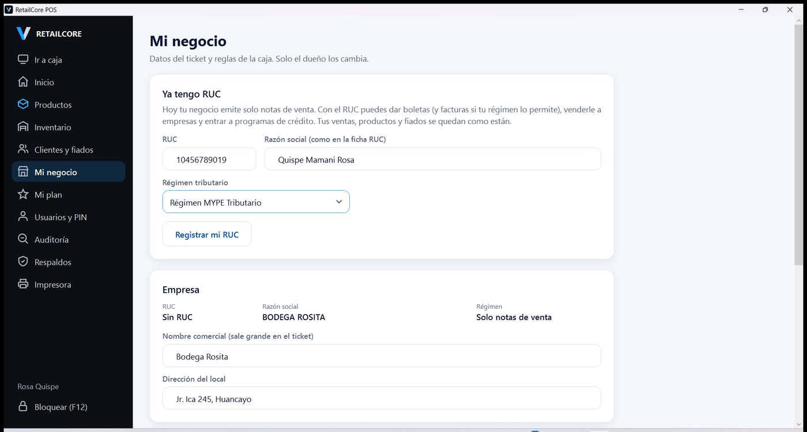
Tus ventas anteriores quedan como notas de venta; productos, inventario, clientes y fiados siguen igual. El RUC se registra una sola vez y queda en Auditoría; si te equivocaste al escribirlo, llama a soporte.
Respaldos, actualizaciones y desinstalar
La app se respalda sola cada día y guarda los últimos 30; lo único manual es llevar una copia a la USB una vez por semana.
- Respaldo automático: unos minutos después de abrir el programa (en una instalación nueva, unos minutos después de terminar el asistente), una vez al día.
- Copia a la USB: conecta la memoria y en Gestión → Respaldos pulsa Copiar a USB. En la ventana revisa que esté elegida la memoria (aparece como «USB» o con su nombre) y pulsa Guardar. Si la app avisa que la copia «está en esta misma PC», no se guardó en la memoria: repite el paso. Guarda la memoria fuera del local.
- Restaurar: solo el dueño, con Restaurar junto al respaldo elegido. Antes de reemplazar, la app guarda lo actual por si acaso, y luego todos vuelven a entrar con su PIN.
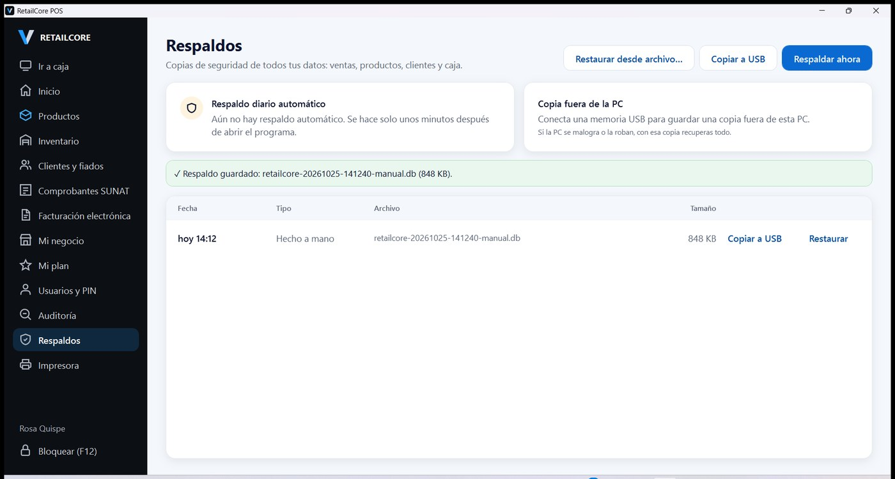
- Actualizaciones: cuando haya una versión nueva, la app la descarga al abrir y la instala al cerrar, sin interrumpir la venta. Si te llevan el instalador nuevo en una USB, ábrelo: dirá «ya está instalado… ¿Desea actualizar?»; pulsa Actualizar. La app se cierra sola y vuelve a abrir con las ventas y el turno abierto tal como estaban.
- Desinstalar: en Configuración de Windows → Aplicaciones → Aplicaciones instaladas, busca «RetailCore», pulsa ⋯ → Desinstalar y confirma. Windows avisa que se borra «su información relacionada», pero los datos del negocio se quedan: si lo vuelves a instalar abre con todo. Si al reinstalar dice «ya está instalado», pulsa Reparar.
Problemas frecuentes
| Pasa esto | Haz esto |
|---|---|
| Windows dice «Windows protegió su PC» al instalar | Más información → Ejecutar de todas formas (el instalador aún no está firmado) |
| La primera apertura tarda casi un minuto | Es normal la primera vez (Windows revisa los archivos); luego abre en segundos |
| No imprime el ticket | Revisa que la impresora de tickets esté encendida y elegida en Gestión → Impresora y balanza; pulsa Imprimir ticket de prueba. Mientras tanto los tickets se guardan como archivo |
| El cajón de dinero no abre | Debe estar conectado a la impresora de tickets, no a la PC; pruébalo con Probar cajón |
| El lector no escribe en la caja | Haz clic en el buscador de arriba (o pulsa F2) y vuelve a escanear |
| «Ese RUC no es válido» en el asistente | Revisa los 11 dígitos tal como en la ficha RUC |
| Una boleta dice «Por enviar» mucho rato | Revisa internet; en Comprobantes SUNAT pulsa Enviar ahora |
| Un cajero olvidó su PIN | El dueño le pone uno nuevo en Gestión → Usuarios y PIN |
| Todavía no tengo RUC | Marca «Todavía no tengo RUC» en el asistente y vende con notas de venta; cuando lo saques, regístralo en Gestión → Mi negocio |
| En una PC nueva salen avisos de Windows u OneDrive | Ciérralos o elige «No, gracias»; no afectan a RetailCore. Si tapan un botón, vuelve a pulsarlo |
| La caja no deja elegir boleta ni factura | El aviso de la caja dice qué falta: registrar el RUC (Mi negocio) o activar el plan Pro (Mi plan) |
| La balanza no responde | En Gestión → Impresora y balanza elige el puerto COM de la balanza, deja 9600 y pulsa Probar balanza con algo en el plato; si no responde, cambia «Cómo pedir el peso» (ENQ, P o W) |
| El celular no abre la página del lector | Celular y PC deben estar en el mismo wifi; escribe la dirección con https:// y acepta el aviso del certificado (Avanzado → Continuar). Si Windows preguntó por el firewall, hay que haber elegido Permitir |
Si algo no está en esta tabla, anota qué hiciste y qué mensaje salió (una foto con el celular sirve) y escríbele a soporte de Velyon.
¿Quieres el manual de uso completo?
Explica el día a día en la caja: vender, cobrar, fiados, cierre, compras, promociones y todo lo de Gestión, con capturas. Pídelo aquí y te lo enviamos al correo.